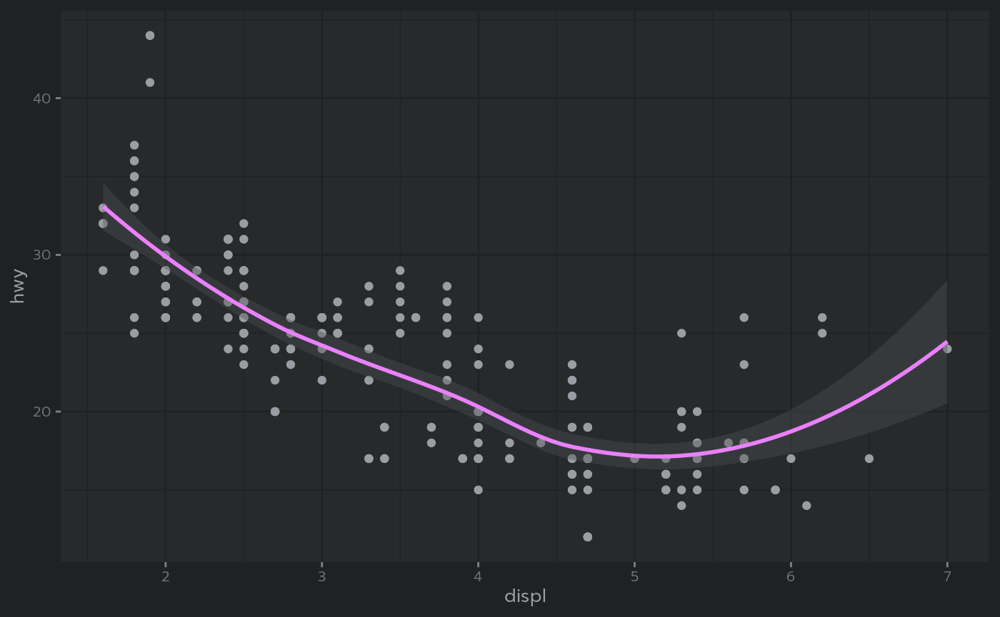

This is an R Markdown document themed with {bslib}
package. bslib makes it easy to customize the main
colors and fonts of a html_document, flexdashboard::flex_dashboard,
shiny::fluidPage(),
or more generally any website that uses Bootstrap for styling. The
theme parameter in the yaml front-matter of this Rmd
document describes a bslib::bs_theme()
object. This particular example uses Bootstrap 3
(version: 3), which is primarily for ‘legacy’ documents
that would break with Bootstrap 4 or above.
When running this document with {thematic}
installed, the thematic::thematic_rmd(font = "auto")
effectively translates theme (CSS) settings to new global
theming defaults for ggplot2, lattice, and
{base} R graphics:
## Warning: package 'ggplot2' was built under R version 4.1.3
ggplot(mpg, aes(displ, hwy)) +
geom_point() + geom_smooth()## `geom_smooth()` using method = 'loess' and formula = 'y ~ x'